Un dúplex con vista al bosque, acomodado a la vida de una familia
Una profesional y sus dos hijos adolescentes convocaron al estudio con una inquietud: un piso muy amplio, con dormitorios pequeños, ¿podrían habitarlo? La propiedad, en dúplex, tenía condiciones inmejorables de asoleamiento y vista al bosque. Había que encontrar la forma de acomodar los espacios a las necesidades de la familia.
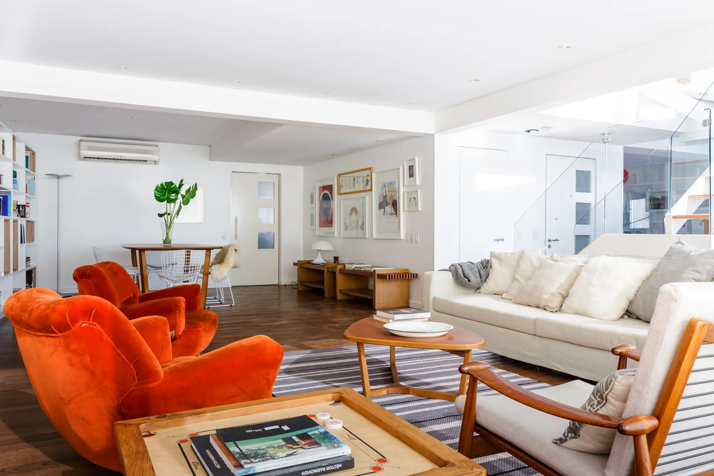
Estudiar juntos, descansar aparte
Los dormitorios eran chicos para alojar una cama, el guardado y además un escritorio. La respuesta fue sacar el estudio de los cuartos y llevarlo a un espacio compartido. Así cada ambiente quedó con una sola función, y la dinámica familiar que ya existía se potenció.
Un escritorio para toda la familia
Los escritorios salieron de los dormitorios y se reunieron en la planta baja, en una sala de estudio común con tres puestos de trabajo, uno para cada integrante de la familia.
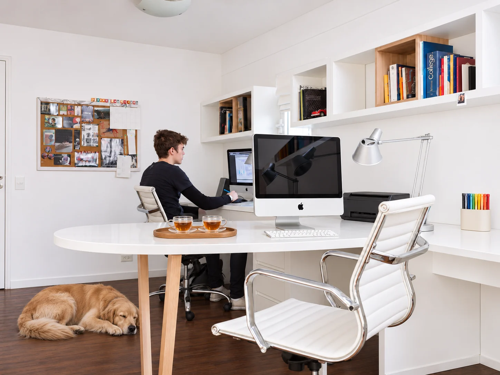
Un vidrio con cortinado
La sala se integra al gran living. Un amplio vidrio con cortinado la separa: abierta, es parte de la casa; cerrada, da privacidad para concentrarse.
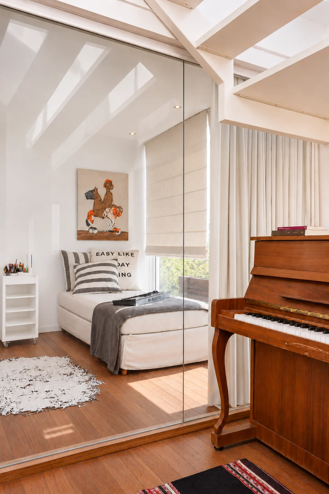
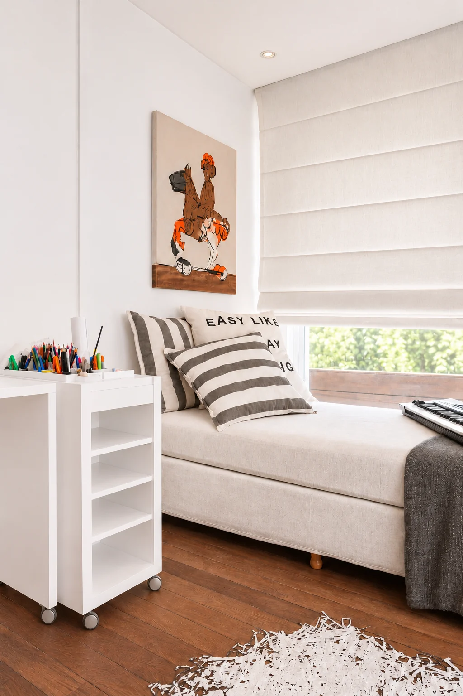
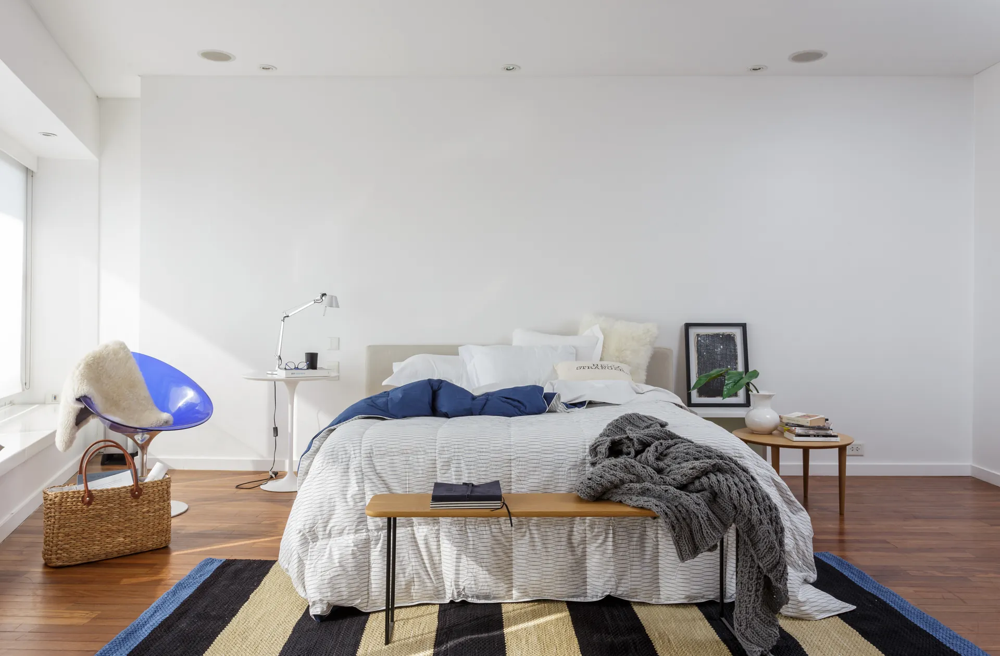
Solo para descansar
Sin el escritorio, cada dormitorio ganó el lugar que le faltaba. Se resolvieron con muebles a medida que maximizan el guardado y camas plataforma con ruedas, y quedaron despejados y luminosos.
Sacar los escritorios de los dormitorios y reunirlos en un estudio común: la idea que hizo habitable la casa
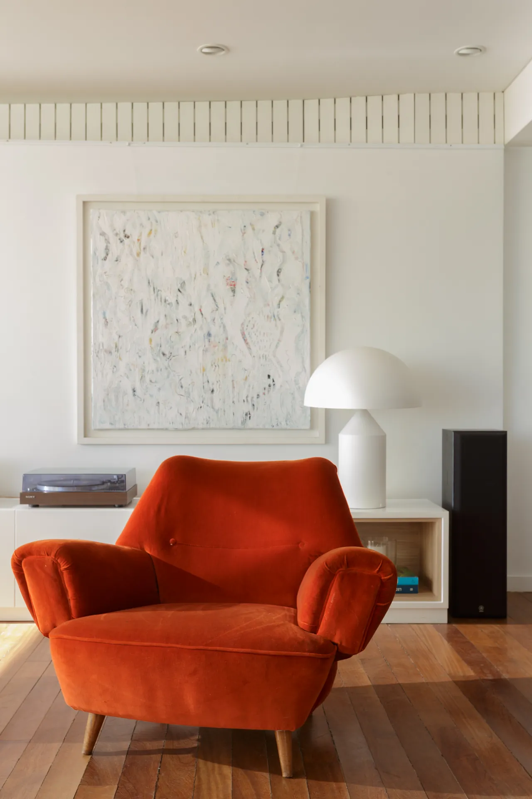
Muebles con historia
Se reciclaron muebles con historia y se diseñaron otros nuevos con un lenguaje común: madera terminada a la laca blanca y roble natural. Muebles clásicos modernos conviven con piezas originales.
Hacia la terraza
El living se abre al sol y a la terraza, con el bosque y la ciudad como telón de fondo.
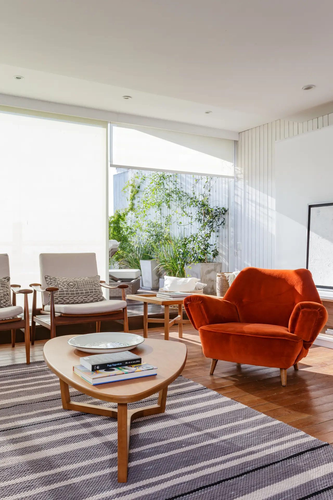
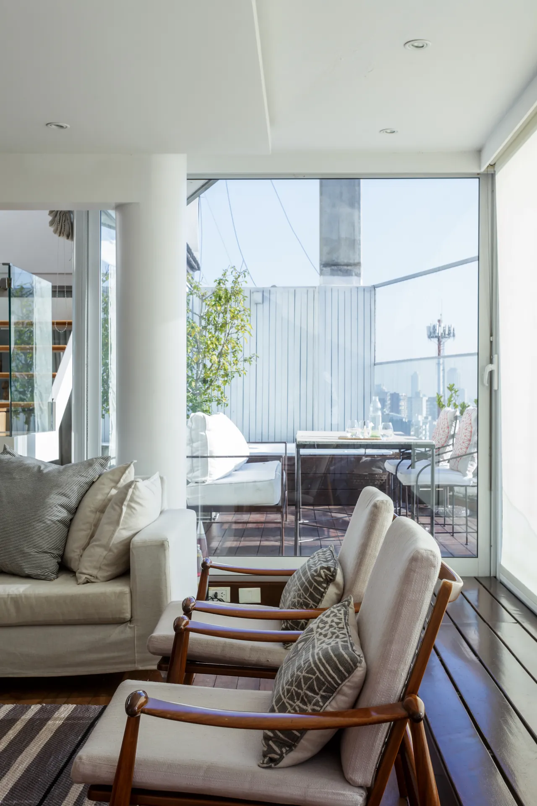
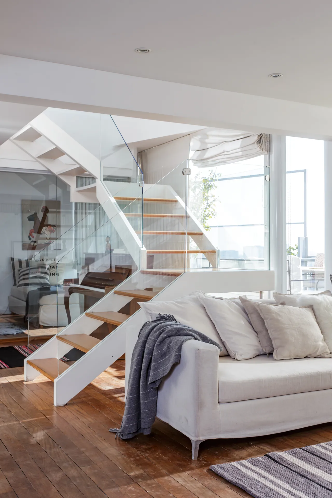
Entre dos plantas
Una escalera liviana, blanca y con baranda de vidrio, une las dos plantas del dúplex sin cortar la luz ni las visuales.
Una biblioteca de pared a pared
Una biblioteca de laca blanca, con nichos de roble, ordena los libros de la familia y acompaña la mesa del comedor.
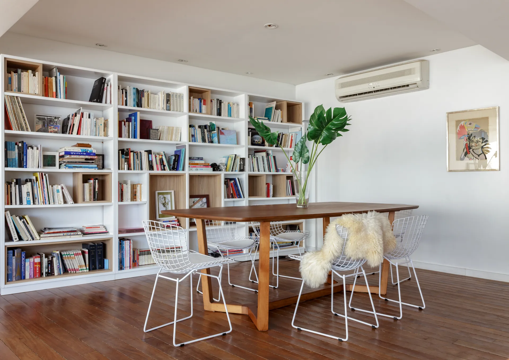
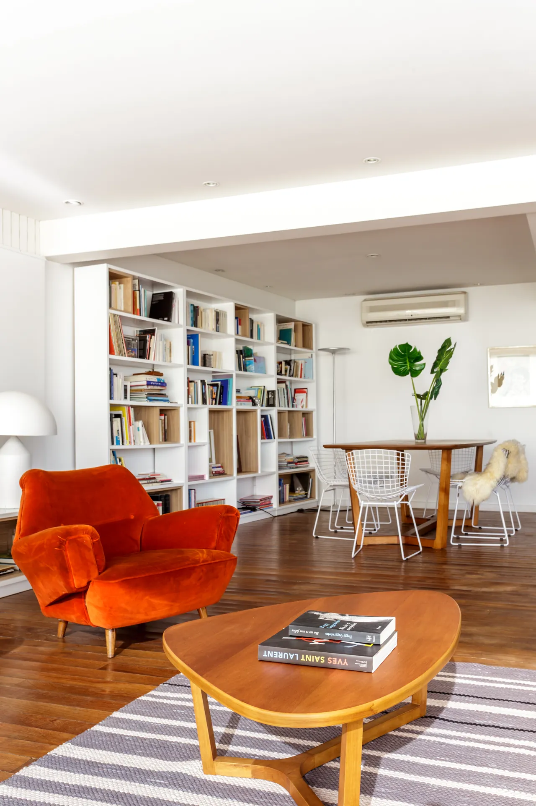
Living y comedor
Living y comedor comparten la misma planta abierta, unidos por la madera del piso y el blanco de los muebles a medida.
Una pared galería
El arte, protagonista de la casa, se desplegó en una pared galería: cada obra se colgó buscando un equilibrio de formas y colores en la composición final.
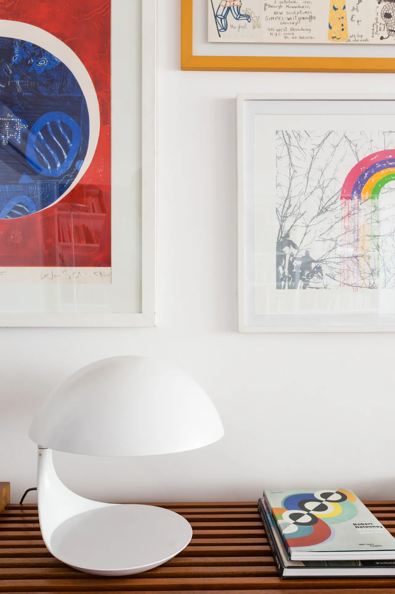
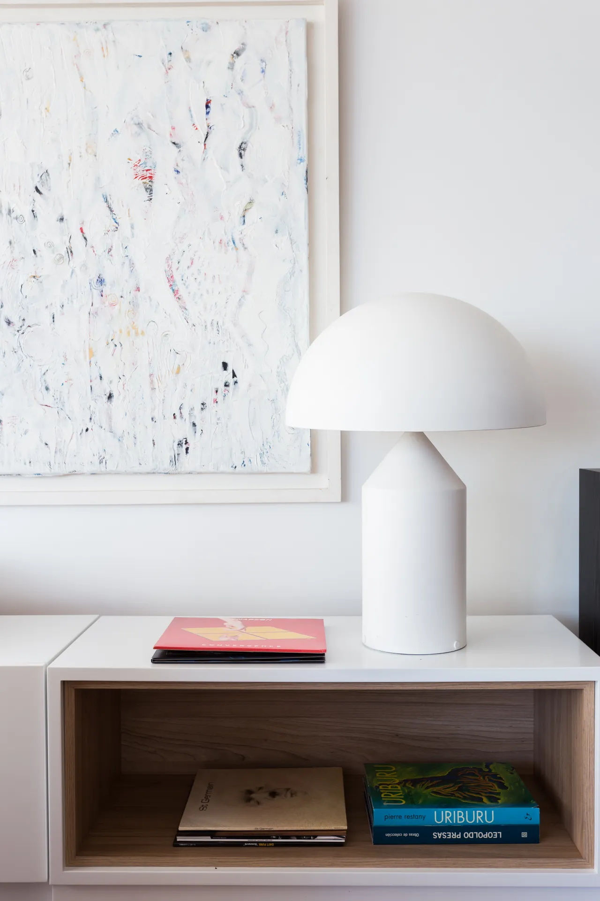
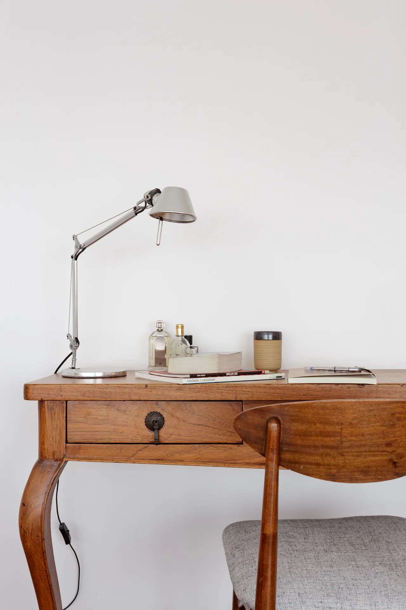
Piezas originales
Un escritorio antiguo de madera, recuperado, convive con una lámpara contemporánea.
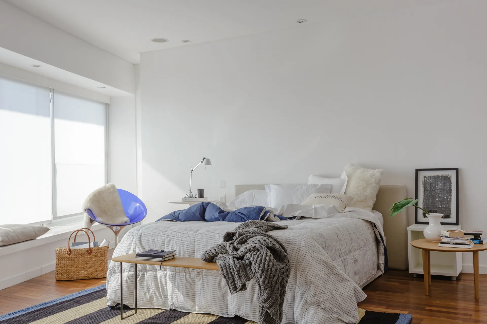
Luz y materia
El encargo fue de equipamiento y diseño interior: el estudio reorganiza los usos, diseña los muebles a medida y combina piezas nuevas con las que la familia ya tenía.
Conocer los servicios
Otros proyectos
Ver todos los proyectos

Todo empieza con una conversación
El estudio diseña viviendas completas en Argentina, España y Estados Unidos.